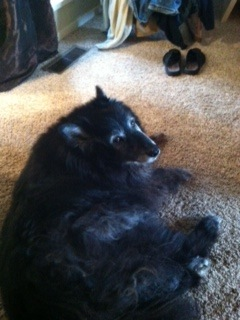

I grew up in Los Altos Hills, CA, with my older brother and parents. Here's an excellent self-portrait:

My family's biggest obsession has always been our dogs, the most recent of which was named Gus:
He is a Belgian sheepdog, and more bear than dog. He was the most gentle creature ever.
I live to rock climbing. I began climbing in 2006, when I was in 8th grade. I joined the youth climbing team of a local gym, Twisters Gym. It was basically my second home, and I spent a lot of time there in my childhood.
What is rock climbing about, at its core? It's an impossible question, so the best I can do is give my opinion. Climbing to me is about graceful movement. It is the art of using strength and technique to generate momentum to carry you upways. Equally important to mention, however, is that rock climbing is about problem solving. The exact application of strength and technique is determined by how you choose to navigate the rocks in front of you. Those rocks lay out a challenge--Can you get to the top?--and your job is to use all tools available to answer that challenge in the affirmative.
That, I think, is probably why its so addictive: once you start solving problems, you just cant stop.